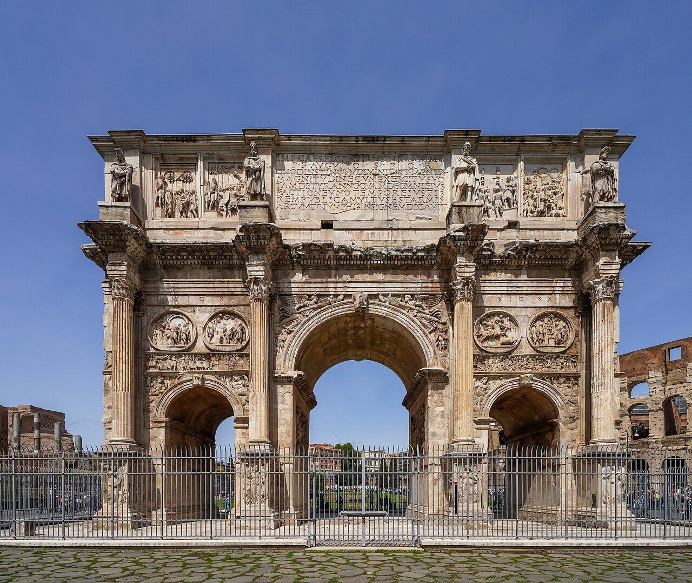
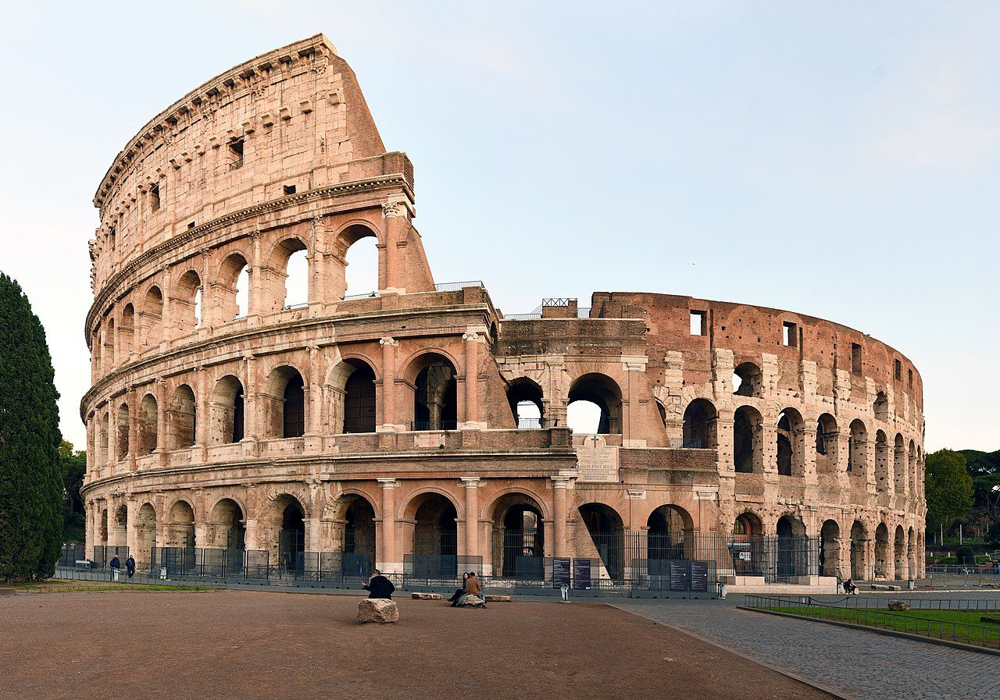
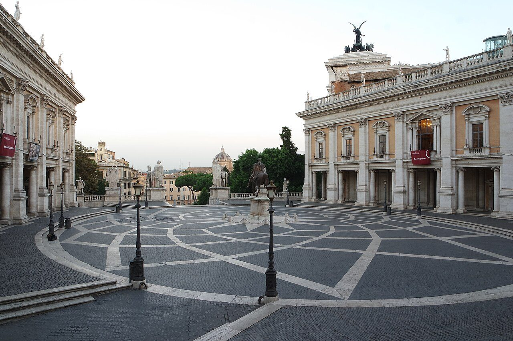
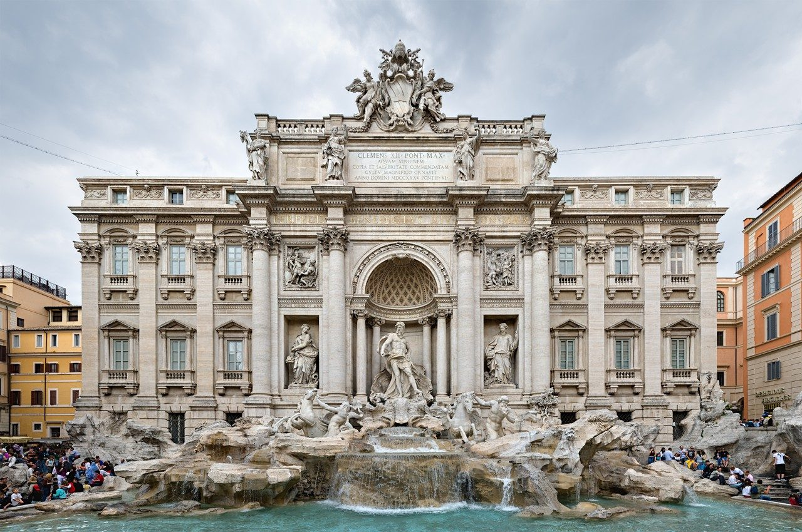
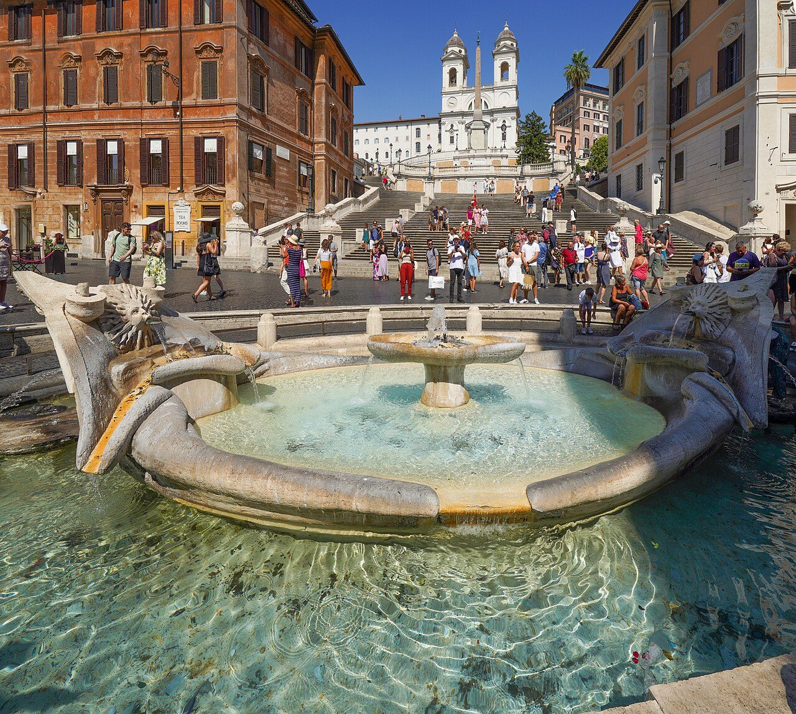
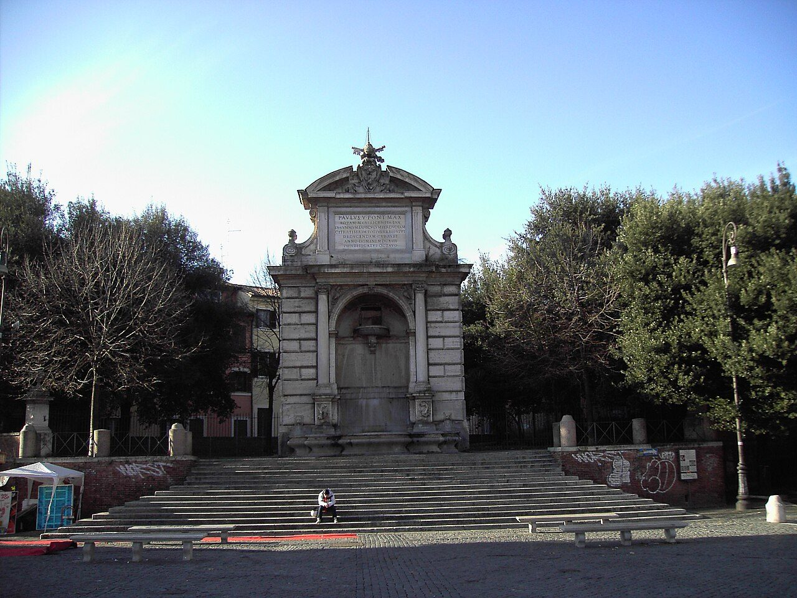
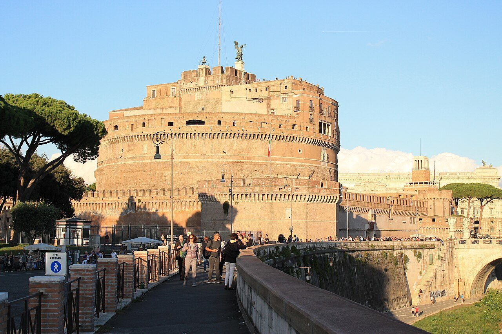

Colosseum and Forums
Colosseum · Basilica of Santa Francesca Romana · Arch of Constantine · Imperial fora
Photo: NikonZ7II (Paris Orlando), CC BY-SA 4.0, via Wikimedia Commons
Walking audio tours · Rome
ArcoTour is the audio guide for exploring the historic centre of Rome as you walk. Pick a route and walk: when you reach a stop, the story starts by itself, even with your phone in your pocket and the screen off.

How it works
Ten routes in the centre of Rome, on foot or by metro: from the Colosseum to the Janiculum, from Trastevere to the Trident.
With your phone in your pocket. For the stories to start by themselves, allow location, also while the app is in the background.
When you arrive, the voice starts by itself, in Italian or English. If GPS is not enough, tap the stop number.
Rome, the first destination
From ancient Rome to Baroque palaces, from Trastevere to the Janiculum: routes on foot and by metro, with a story for every stop.

Colosseum · Basilica of Santa Francesca Romana · Arch of Constantine · Imperial fora
Photo: NikonZ7II (Paris Orlando), CC BY-SA 4.0, via Wikimedia Commons

Trajan’s Column · Great Garden of Palazzo Venezia · Victor Emmanuel II Monument · Santa Maria in Aracoeli · Piazza del Campidoglio
Photo: Kameister, CC BY-SA 4.0, via Wikimedia Commons

Ponte Sisto · Campo de’ Fiori · Piazza Navona · Pantheon · and 4 more stops
Photo: David Iliff (Diliff), CC BY 3.0, via Wikimedia Commons

Piazza di Spagna · Ara Pacis · Piazza del Popolo
Photo: WikiRomaWiki, CC BY-SA 4.0, via Wikimedia Commons

Santa Cecilia in Trastevere · Basilica of San Crisogono · Santa Maria in Trastevere · Piazza Trilussa
Photo: Lalupa, public domain, via Wikimedia Commons

Villa Farnesina · San Pietro in Montorio · Garibaldian Ossuary Mausoleum · Acqua Paola Fountain (Fontanone) · and 4 more stops
Photo: John Samuel, CC BY-SA 4.0, via Wikimedia Commons
In the app the routes can be combined with optional detours and details along the way.
Audio guides
At every stop the story starts when you arrive, even with your phone in your pocket and the screen off.
The voices are synthetic, generated with artificial intelligence. The texts do not come out of nowhere: they start from facts with a stated source and are approved before they become audio.
Facts first, then the story.
It is the rule every ArcoTour text is born from.
Maps and public transport
ArcoTour also helps you get around: you see where the nearby stops are and how to walk to them.
The Transport tab shows the nearby public transport stops and lines, with the route of each line.
It guides you on foot to the stop you chose.
Pick the places you like on the map: the app puts them in the order that makes you walk the least.
The maps are from OpenStreetMap and need internet to be shown.
Rome passes
Three temporary passes for Rome. One-time payment, no automatic renewal: the time counts from the moment you buy and, when it is up, access to the stories ends by itself.
From purchase, for 24 hours
€2.99
All the tours of Rome
From purchase, for 72 hours
€4.99
All the tours of Rome
From purchase, for 10 days (240 hours)
€7.99
All the tours of Rome
Indicative prices for Italy: the final price is the one the App Store shows when you buy. Purchases are available in the app. Questions about passes and restoring purchases.
Privacy
ArcoTour has no accounts, no ads and no analytics or tracking tools.
It uses the internet for only two things: downloading maps from OpenStreetMap and, if you buy a pass, talking to Apple’s App Store.
The photographs come from Wikimedia Commons and belong to their authors, who released them under the licences listed below. They are resized for the web.
| Photo | Author | Licence | Source |
|---|---|---|---|
| Colosseo 2020.jpg | FeaturedPics | CC BY-SA 4.0 | File page |
| Arch of Constantine (Rome) - South side, from Via triumphalis.jpg | NikonZ7II (Paris Orlando) | CC BY-SA 4.0 | File page |
| Piazza del Campidoglio 2015.jpg | Kameister | CC BY-SA 4.0 | File page |
| Trevi Fountain, Rome, Italy 2 - May 2007.jpg | David Iliff (Diliff) | CC BY 3.0 | File page |
| Barcaccia e scalinata.jpg | WikiRomaWiki | CC BY-SA 4.0 | File page |
| Castel Sant’Angelo (Rome) - Exterior.jpg | John Samuel | CC BY-SA 4.0 | File page |
| Trastevere - Fontanone dei cento preti a piazza Trilussa 1527.JPG | Lalupa | public domain | File page |
The app’s map data is © OpenStreetMap contributors, available under the ODbL licence.
Fonts: Playfair Display and Inter, under the SIL Open Font License 1.1 (Inter, Playfair Display).
_-_South_side,_from_Via_triumphalis.jpg){kind=link}


_-_Exterior.jpg){kind=link}